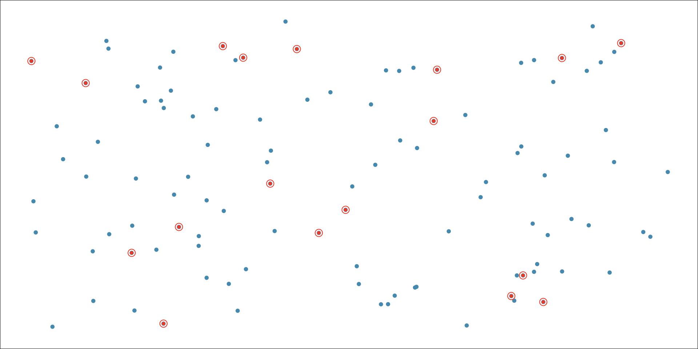

Overview of Statistics and Data 📖
MATH 4720/MSSC 5720 Introduction to Statistics
Statistics as Numeric Records
- In ordinary conversations, the word statistics is used as a term to indicate a set or collection of numeric records.


Statistics as a Discipline

- Statistics is a Science of Data.
- A science of data using statistical thinking, methods and models.
🤔 But wait, then what is DATA SCIENCE ❓
Difference between Statistics and Data Science


My ChatGPT says:
Statistics is foundational to Data Science, but Data Science also includes programming, data engineering, machine learning, and business communication.
Data Science Life Cycle

What We Learn In this Course

Target Population
The first step in conducting a study is to identify questions to be investigated.
-
A clear research question is helpful in identifying
- what cases should be studied (row)
- what variables are important (column)
Target Population: the collection of all objects which we are interested in studying from.
- What is the average GPA of currently enrolled Marquette students?

All Marquette students that are currently enrolled.
Target Population
The first step in conducting a study is to identify questions to be investigated.
-
A clear research question is helpful in identifying
- what cases should be studied (row)
- what variables are important (column)
Target Population: the collection of all objects which we are interested in studying from.
- Does a new drug reduce mortality in patients with severe heart disease?

All people with severe heart disease.
Limitation of Observational Studies: Confounding
- Confounder: A variable NOT included in a study but affects the variables in the study.
- Observe past data show that increases in ice cream sales are associated with increases in drownings, and we conclude that eating ice cream causes drownings. 😱 😕 ⁉️

What is the confounder that is not in the data, but affects ice cream sales and the number of drownings?
Temperature: as temperature increases, ice cream sales increase and the number of drownings goes up because more people swim.

Simple Random Sample
Random Sample: Each member of a population is equally likely to be selected.
Simple Random Sample (SRS): Every possible sample of sample size \(n\) has the same chance to be chosen.
Example: If sample 100 students from all, say 10,000 Marquette students, I would randomly assign each student a number (from 1 to 10,000), then randomly select 100 numbers.


Cluster Sampling
Cluster Sampling: Divide the population into clusters, then randomly select some of those clusters, and then choose all the members from those selected clusters.
Homogeneous between clusters; Non-homogeneous within clusters